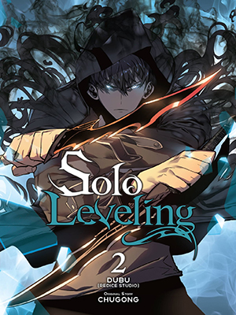
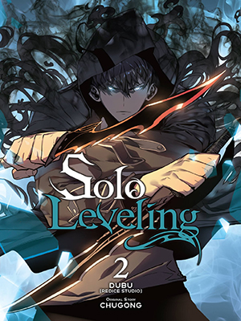
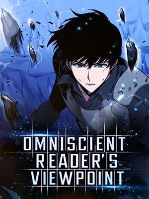
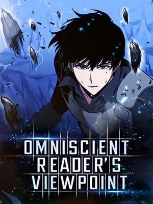

Solo Leveling
Solo Leveling, also alternatively translated as Only I Level Up, is a South Korean web novel written by Chugong. It was serialized in Kakao's digital comic and fiction platform KakaoPage beginning on July 25, 2016, and was later published by D&C Media under their Papyrus label since November 4, 2016


 
